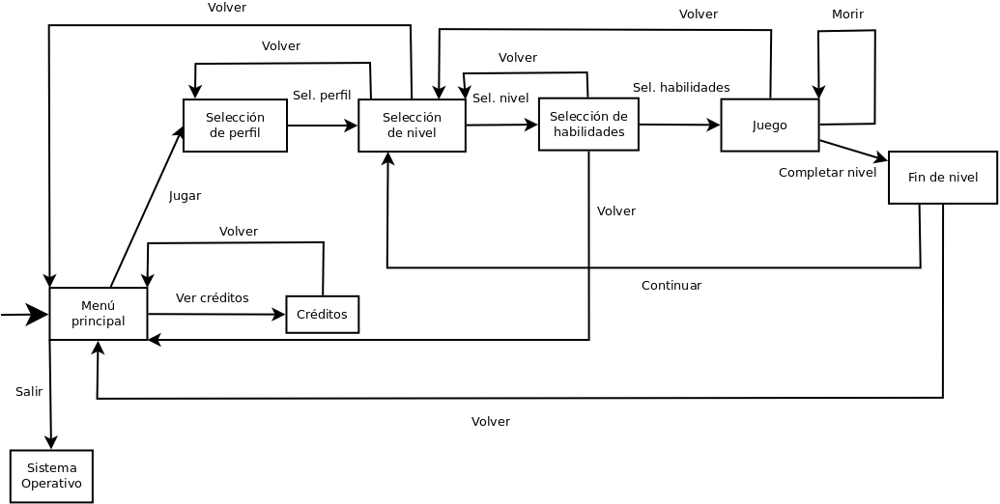
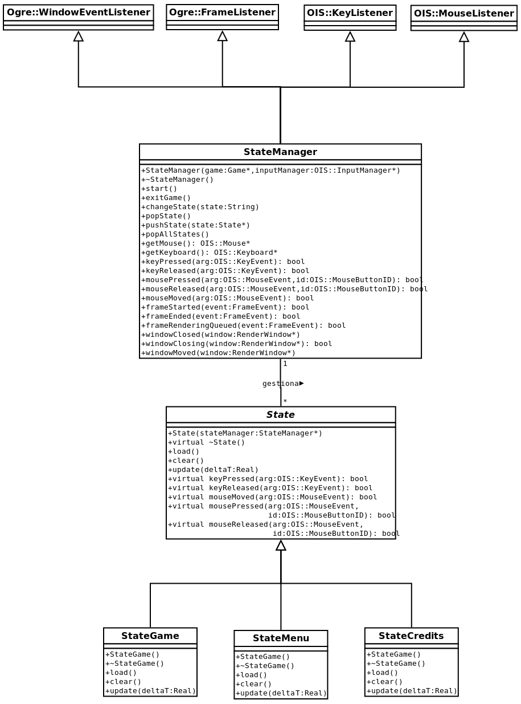
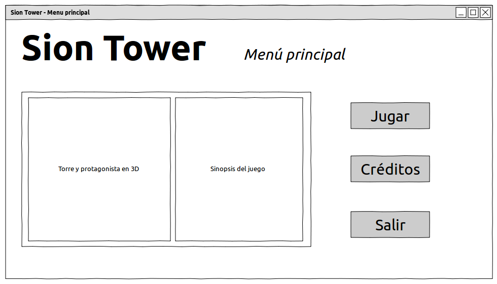
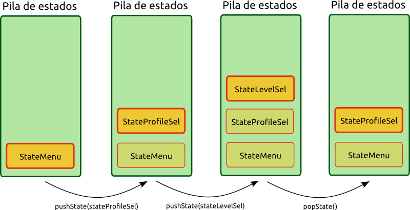

Apr 7, 2011 · 2 minute read · Comments
Games development
Menuda noticia, acabo de enterarme de que IberOgre y Sion Tower es el proyecto más descargado de todo el V Concurso Universitario de Software Libre. En el momento de la redacción de este artículo cuenta con 562 descargas. Estaba leyendo la memoria de JavaDikt (Luis Alfonso Arce González) en la que comenta que ha conseguido colocarse como segundo proyecto más descargado (218) justo detrás del mío. Quiero darle las gracias por mencionar a IberOgre y la enhorabuena por el estupendo trabajo que está realizando, creo que tiene un pie en la final.
No creo que 562 descargas sean para organizar una fiesta aunque estoy satisfecho con la cifra y decidido a mejorarla. Resulta curioso comprobar el reparto de descargas entre los distintos paquetes publicados:
Parece ser que el espíritu educativo y de documentación que tiene el proyecto es lo que adquiere más importancia entre los usuarios. El documento de diseño ha sido publicado en varios blogs como ejemplo, gracias a esta difusión ha alcanzado la mencionada cifra de descargas.
Cabe destacar que IberOgre y Sion Tower se ha mantenido prácticamente durante todo el concurso entre los proyectos más activos de Red Iris. En numerosas ocasiones ha alcanzado el 100% de actividad según el baremo de la forja y raras veces ha bajado del 85%.
Os dejo, toca desarrollar que dentro de poco comienzan las evaluaciones.
Apr 6, 2011 · 4 minute read · Comments
Games development
Sion Tower cuenta con varios estados y transiciones los cuales están especificados en el Documento de Diseño (GDD) que publiqué hace tiempo. Por supuesto, me refiero a estados como “Juego”, “Menú”, “Selección de nivel”. Me parece interesante comentar a vista de pájaro estos estados así como el sistema subyacente que los gestiona. Puede ser una buena manera para saber hasta dónde pretende llegar el juego. En este artículo hablaremos de las clases State y StateManager entre otras.
Diagrama de estados
En el siguiente diagrama se muestran los distintos estados en los que se puede encontrar Sion Tower:

- Menú principal: se muestra el logo del juego y la torre desde el exterior. El usuario puede elegir entre “Selección de perfil”, “Créditos” o “Salir”.
- Créditos: en la pantalla de créditos se sustituyen las opciones del menú principal por los nombres de los implicados en el desarrollo, como era de esperar. La única opción es volver al menú.
- Selección de perfil: el usuario puede seleccionar su partida entre la lista de partidas guardadas. Así podrá recuperar los niveles desbloqueados y las habilidades adquiridas por el personaje.
- Selección de nivel: se muestra una lista de los niveles disponibles según el perfil elegido. De cada nivel aparece el nombre, una descripción y un icono.
- Selección de habilidades: no es posible utilizar todas las habilidades en cada nivel, el usuario debe seleccionar un número limitado de ellas.
- Juego: la pantalla de juego, donde se desarrolla la acción. Si el usuario vence a los enemigos se pasa a la pantalla de victoria, en caso contrario le aparece un mensaje y se reinicia el nivel.
- Fin de nivel: cuando el usuario vence se muestran los puntos obtenidos y otros logros como haber desbloqueado alguna habilidad nueva.
Para detalles adicionales podéis acudir al documento de diseño que incluye bocetos completos de cada uno de los estados.
Diagrama de clases
A continuación podéis ver un diagrama UML con las clases que gestionan los estados del juego. Es bastante grande así que lo mejor es hacer click sobre la imagen para ampliarla.

La clase State
State es una clase abstracta que modela un estado de juego genérico. Cuenta con los métodos virtuales load y clear para cargar y liberar los elementos que contiene sin necesidad de destruir el estado completamente. Todos los estados poseen un método update que recibe el tiempo en ms desde el último frame (deltaT) para actualizar lógicamente los elementos de dicho estado. Los estados están preparados para recibir los eventos que captura el StateManager, por ello cuenta con los manejadores típicos de la biblioteca OIS (más sobre OIS en IberOgre).
Por cada estado de juego tendríamos una clase que herede de State como podrían ser StateGame, StateMenu o StateCredits. Por ejemplo, el estado de juego controlaría al personaje, los enemigos y el escenario. Como podéis ver es un sistema muy genérico y extensible para otros proyectos. De hecho estoy pensando en liberarlo de forma independiente.

La clase StateManager
La clase StateManager lleva internamente una pila de estados lo que nos permite volver atrás por los menús del juego de forma muy sencilla. El tope de la pila sería el estado activo mientras que el resto pueden estar en pausa o ejecutándose en segundo plano. A través de los metodos changeState, pushState, popState y popAllStates se nos permite gestionar los cambios entre estados. No hay que tener cuidado con el momento en el que se hace un popState, no se destruye ningún estado en ese preciso instante. El StateManager espera a un momento seguro para hacerlo, no más segmentos violados en ese aspecto.

StateManager inicia el bucle de juego con el método start y se comporta como un FrameListener. En cada iteración se disparan los eventos frameStarted, frameEnded y frameRenderingQueued para actualizar lógicamente los estados activos de la pila. Así mismo recibe eventos de ventana, de teclado y de ratón que transmite a los eventos que controla.
La idea de la pila de estados y las transiciones seguras la tomé de uno de los proyectos de mi compañero José Tomás Tocino. Lo utilizaba en un juego con Gosu mientras que yo lo he adaptado a Ogre y OIS.
Conclusiones
Con esto terminamos la documentación de la gestión de estados de Sion Tower. Habréis comprobado que de una forma sencilla y ordenada podemos añadir, modificar y manejar nuestros estados de juego. Sed libres (GPL 3) de reutilizar este código alojado en la forja de Red Iris.
¡Se aceptan sugerencias, críticas y lanzamiento de fruta podrida!
Apr 5, 2011 · 4 minute read · Comments
Games development

Hace unos días publicaba un vídeo mostrando el sistema de búsqueda de caminos empleando mallas de navegación y el algoritmo A estrella para Sion Tower. Pudisteis ver que el personaje recorría el camino de forma brusca, actualmente el problema se ha solucionado gracias a la inclusión de splines en una colaboración del compañero Javier Santacruz (@arld101). ¡La primera colaboración en forma de código! En este artículo nos centraremos en ilustrar a grandes rasgos como funciona la búsqueda de caminos internamente.
Conceptos generales
El problema inicial era la necesidad de que los enemigos pudiesen moverse por el escenario hacia un objetivo evitando los obstáculos estáticos. El ejemplo más común sería el de perseguir al protagonista para atacarle. Para ello es necesario definir las zonas transitables de alguna manera y la respuesta es emplear una malla de navegación.
En Blender se crea una malla compuesta de triángulos interconectados tal y como se ilustra en la imagen que ya he mostrado en alguna ocasión. El sistema de carga de niveles procesa la malla y genera un grafo de forma interna. Realizar búsqueda de caminos dentro del grafo es un problema conocido y relativamente sencillo de resolver como veremos más adelante. Además el sistema soporta celdas con inclinación (como en las escaleras) aunque al algoritmo esto le es indiferente.

Clases implicadas
El sistema de búsqueda de caminos de Sion Tower está compuesto por las clases del siguiente diagrama:

- Cell: representa una celda triangular de la malla.* NavigationMesh: malla de navegación formada por un grafo de Cells. Permite localizar elementos en celdas de la malla, conocer la altura a la que debe colocarse un personaje para pegarlo al suelo, realizar consultas de línea de visión y búsqueda de caminos.* CellNode: nodo de la búsqueda de caminos. Tiene asociado una Cell, y los costes de la heurística.* Level: ya hablamos de ella en otra ocasión. Se encarga de cargar y almacenar la información de los niveles desde ficheros en formato XML. Entre la información del nivel, carga un NavigationMesh.
Algoritmo A*
El algoritmo A* es de sobra conocido por muchos y puede obtenerse mucha información sobre el mismo en decenas de fuentes. En la búsqueda de Sion Tower le indicamos una posición de comienzo y una de destino al método buildPath de NavigationMesh y se nos devuelve una lista de puntos por los que hay que pasar. De forma esquematizada se hace lo siguiente:
- Encontrar las celdas en las que se encuentran las posiciones de inicio y destino
- Crear un montículo con un CellNode asociado a la primera celda.
- Bucle:
- Sacar el nodo más prometedor del montículo.
- Si el nodo corresponde a la celda final, hemos terminado.
- Introducimos en el montículo los nodos cuyas celdas son vecinas a las del nodo actual.
- Comenzar de nuevo el paso 3.
- Reconstruir el camino de puntos empleando un spline para evitar cambios bruscos.
Colaboración para suavizar el camino
El compañero Francisco Javier Santacruz se interesó en suavizar la ruta resultante de la búsqueda y rápidamente se puso manos a la obra. Tras un par de días de trabajo me envió un parche que apliqué gustosamente por sus impresionantes resultados.
La forma de suavizar la ruta consiste en generar muchos puntos intermedios siguiendo un spline. Los splines son curvas definidas mediante polinomios: ¡por fin las clases de Métodos Numéricos sirven para algo! En el caso que nos ocupa utilizó el spline de Catmull-Roll, un tipo de interpolación cúbica. En la prueba que me mandó se visualizaba la ruta del personaje ya suavizada como una línea en el suelo dibujada con primitivas de Ogre. Simplemente restan por hacer unos pequeños ajustes, ¡muchas gracias!

Conclusiones
Implementar el sistema de búsqueda de caminos con una malla de navegación ha sido muy enriquecedor ya que era una materia completamente desconocida por mí hasta el momento. He aprendido mucho sobre las distintas aproximaciones existentes y la forma de aplicarla a un juego tridimensional. Además he obtenido la primera colaboración en términos de código a través de un parche. Los que estéis interesados en los detalles podéis acudir a la rama correspondiente de la forja.
¡Seguiré informando!
Apr 4, 2011 · 1 minute read · Comments
Games development

Vuelve la actividad a la wiki de Ogre en español gracias a Alberto Cejas Sánchez. El compañero responsable del proyecto Fútbol es Así estaba trabajando en la detección de colisiones para su videojuego y finalmente decidió utilizar el wrapper de Bullet para Ogre. Tras dar los primeros pasos ha publicado “Colisiones y físicas con OgreBullet”. Por el momento ha publicado la instalación en GNU/Linux (de la que no existía apenas información) y Windows, más adelante irá completando el artículo. Muchísimas gracias a Alberto por su nueva colaboración.

Bullet es una de las bibliotecas libres (licencia zlib) de detección de colisiones y simulaciones físicas más potentes que existe. Por su extrema capacidad me pareció excesivo utilizarlo en Sion Tower ya que no requería interacciones físicas. No obstante, cualquier interesado en incorporar este elemento en su videojuego debería considerar utilizar Bullet. Entre sus características se encuentran:
- Colisiones entre cuerpos rígidos y blandos de forma discreta o continua.* Varias formas básicas: esferas, cajas, cilindros, conos, poliedro convexos, etc.* Simulación de ropa, cuerdas y objetos deformables.* Restricciones para cuerpos más realistas.
Bullet se ha utilizado en decenas de proyectos de renombre como Blender, Cinema 4D, Grand Theft Auto IV o Trials HD. En el siguiente vídeo podéis ver un pequeño ejemplo del potencial de la biblioteca.
Apr 3, 2011 · 1 minute read · Comments
Games development

Este año la normativa del Concurso Universitario de Software Libre exige que se presente una memoria por proyecto para facilitar la evaluación de los mismos a los miembros del jurado. Este fin de semana no he podido desarrollar demasiado ya que he estado recopilando información para redactar dicha memoria. Aún así tengo novedades muy interesantes que iré publicando estos días.